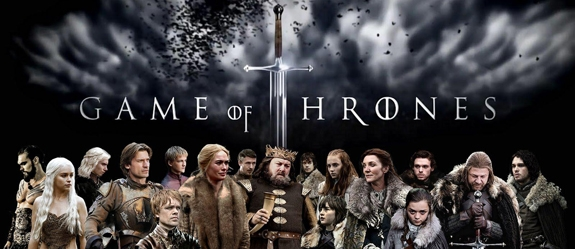

La propiedad clip-path en CSS para seleccionar regiones a mostrar en elementos
Rectángulos con polígonos

Rectángulos con inset
Rectángulos con inset
Rectángulos con inset
Círculo
Eclipse
Otros polígonos
Animaciones 1
Animaciones 2